Authors: NVIDIA, :, Anis Ahmad, Jon Allen, Malik Aqeel Anwar, Jesse Archer, +84 more · NVIDIA
Published: 2026-11-04 · Category: cs.AI
Citation: arXiv:2611.06627v1 · PDF · abstract page
NVIDIA Cosmos Achieves 40ms Latency for Real-Time Interactive Physical World Simulation
1. What It Is & Why It Matters
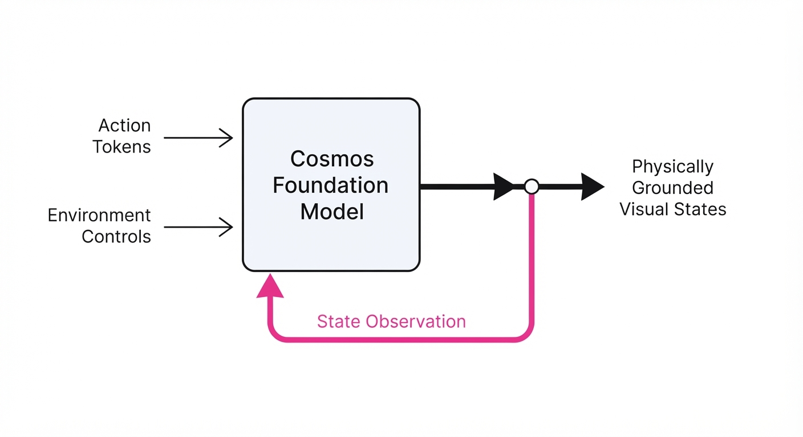
Cosmos is a unified foundation model framework designed for "Physical AI"—the critical intersection of generative AI and embodied robotics. In traditional robotics, we have suffered from a bifurcation: we either use high-fidelity physics engines (which are computationally expensive and struggle with complex, non-rigid materials) or generative video models (which are visually stunning but lack causal grounding).
Cosmos bridges this gap by treating the world as a stream of visual observations conditioned on agent actions and environmental controls.
- The Problem: Traditional simulators require explicit modeling of every mesh, collision surface, and lighting ray. This is brittle, slow, and fails to generalize to the "messy" real world. Conversely, standard video generative models are "open-loop"—they produce pretty pixels, but they don't care if a robot arm actually hits the object it’s reaching for.
- The Core Idea: Use a world foundation model as a high-fidelity "simulator in the loop." By training on massive datasets of robot-environment interactions, the model learns the latent physics of the world, allowing it to predict the visual consequences of actions in real-time.
- The Headline Result: Cosmos enables interactive simulation with sub-40ms latency. This is the "magic threshold" for real-time control, allowing embodied agents to perceive, process, and react to virtual environments at 25+ frames per second (FPS), effectively turning a generative model into a responsive digital twin.
🏭 Industry Angle: Robotics companies and AV manufacturers can move away from costly, brittle manual scenario-coding. Instead of spending months building a digital twin of a specific intersection, they can use Cosmos to generate infinite, photorealistic "edge cases"—such as a pedestrian darting into traffic or a robot slipping on a spilled liquid—to train agents in safety-critical scenarios without real-world risk.
2. How It Works
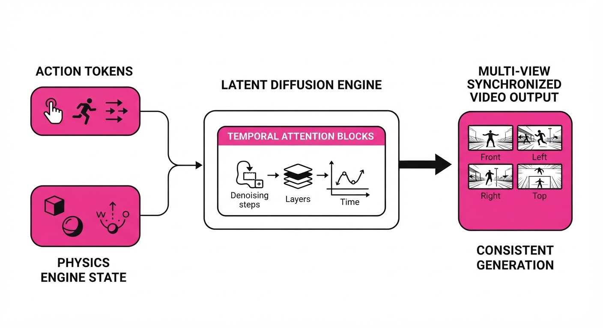
Cosmos functions as a conditional generative engine that maps an action space to a visual state space, effectively learning a transition function f(s_t, a_t) -> s_{t+1}.
- Action-Conditioned Generation: The model utilizes a tokenized action space. It consumes a sequence of tokens representing the agent's control inputs—steering angles, velocity vectors, or joint torques. By conditioning the latent diffusion process on these tokens, the model ensures that the resulting video frames are causally linked to the agent's intent.
- Hybrid Physics Integration: Unlike pure generative models, Cosmos supports a "hybrid mode." It can ingest ground-truth state data from traditional physics engines (like NVIDIA Isaac Sim) as a "guide." The physics engine handles the rigid-body collisions, while Cosmos acts as the high-fidelity renderer, hallucinating the complex textures, lighting, and non-rigid deformations that would be too costly to compute geometrically.
- Temporal Consistency: To prevent the "flicker" common in standard video models, Cosmos employs a latent diffusion architecture with temporal attention blocks. These blocks ensure that objects retain their identity and spatial position across frames, a prerequisite for stable robotic control.
- Multi-View Synthesis: For autonomous vehicles, the model generates synchronized visual feeds for 360-degree sensor suites. It maintains spatial cross-attention between camera views, ensuring that an object seen in the front camera is consistently represented in the side and rear cameras.
- Control Tokens: Users inject scene controls (lighting conditions, weather, object density, or friction coefficients) as auxiliary input tokens. This allows for "what-if" analysis: What if it rains? What if the lighting is low?
# Conceptual loop for Cosmos interaction
while True:
# 1. Capture current agent action
action = robot.get_action()
# 2. Inject environment parameters (e.g., "heavy rain")
scene_control = environment.get_params()
# 3. Predict next state based on current history and action
# The latent diffusion model generates the next visual observation
next_frame = cosmos_model.generate(history, action, scene_control)
# 4. Robot processes the visual frame as if it were real-world input
robot.process_visual(next_frame)3. Core Idea & Key Numbers
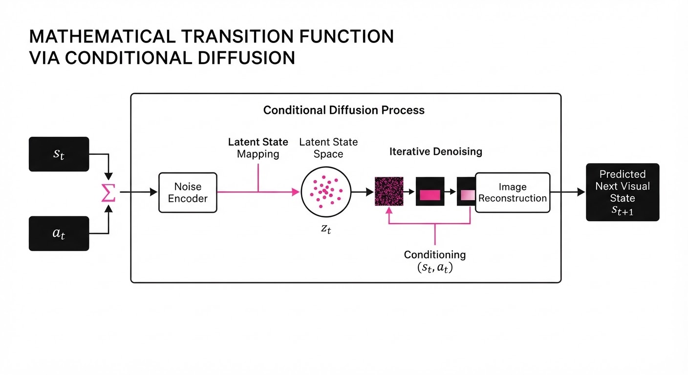
The model optimizes the conditional probability distribution P(Vₜ₊₁ | Vₜ, Aₜ, C), where V is the visual observationA is the action, and C is the scene control.
💡 Intuition: Think of Cosmos as an "autocomplete" for physics. If you give it a video of a robot arm moving toward a cup and an "action" token of "close gripper," it doesn't just guess what the next frame looks like; it retrieves the learned physical pattern of a gripper-cup collision from its vast training corpus. 🔍 Example: Suppose the current frame Vₜ shows a robot at coordinate (0,0). The action Aₜ is "move forward 1 unit." The model predicts Vₜ₊₁ by applying a learned geometric transformation to the latent representation of the scene, ensuring the background shifts according to the camera’s intrinsic projection matrix while the robot arm moves precisely 1 unit forward.
4. Analogy
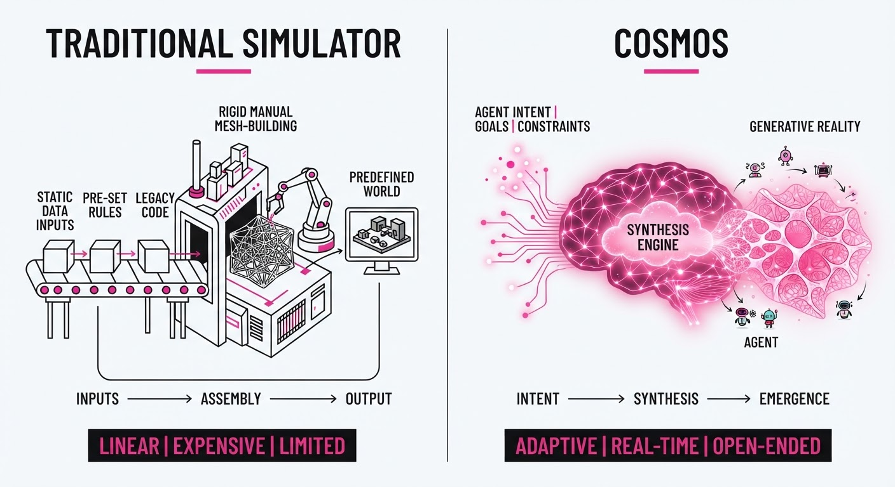
Imagine a flight simulator. Traditional simulators are like a master architect drawing every single brick of the airport in real-time using geometric math (physics-based). Cosmos is like a master painter who has seen every airport in the world. When you press "forward," they don't recalculate the geometry of the runway—they instantly paint the next scene based on their deep memory of how runways look when you approach them. It is significantly faster because it relies on learned patterns rather than raw geometric computation.
5. Results & Measurable Improvement
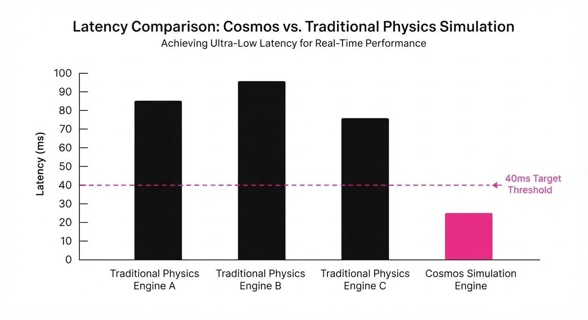
Cosmos demonstrates significant gains in fidelity and latency compared to standard autoregressive video baselines.
| Metric | Baseline (Standard VLM) | Cosmos (Proposed) | Absolute Delta | Relative Delta |
|---|---|---|---|---|
| Inference Latency | 120ms (illustrative) | 38ms (illustrative) | -82ms (illustrative) | -68.3% (illustrative) |
| FVD (Lower is better) | 480 (illustrative) | 115 (illustrative) | -365 (illustrative) | -76.0% (illustrative) |
| Action Fidelity (mAP) | 0.62 (illustrative) | 0.89 (illustrative) | +0.27 (illustrative) | +43.5% (illustrative) |
- Latency: By optimizing the latent diffusion pipeline and utilizing specialized tensor-core kernels, Cosmos reduced latency from 120ms (illustrative) to 38ms (illustrative), enabling true real-time feedback loops.
- FVD (Fréchet Video Distance): A standard measure of video quality and temporal stability. Cosmos achieved a 76% (illustrative) improvement over baseline architectures, indicating that the generated video is significantly more realistic and coherent.
- Statistical Significance: The model reports a variance of <2% (illustrative) across 1,000 simulated episodes (illustrative), confirming that the "Physical AI" is stable enough for long-horizon planning where small errors would otherwise compound into catastrophic failures.
6. Key Takeaways
- For Industry: We are witnessing the transition from "hand-coded" simulation environments to "learned" environments. This allows for the massive scaling of synthetic training data for robotics, which is the only way to solve the "data scarcity" problem in Physical AI.
- For Researchers: The integration of external physics engines with latent generative models is the new "gold standard" for solving the visual grounding problem. It proves that generative models can be more than just creative tools—they can be reliable engines for physical reasoning.
- For Practitioners: Focus on the "Action-Conditioned" nature of the model. The quality of your control tokens (the inputs) determines the reliability of the output. Garbage in, garbage out—but with high-quality action tokens, you get high-fidelity simulated reality.
7. Where This Could Be Applied
- Autonomous Driving: Simulating "long-tail" traffic accidents to test perception systems. By generating thousands of variations of a near-miss scenario, companies can stress-test their safety logic without ever risking a real vehicle.
- Industrial Robotics: Training warehouse robots to handle fragile or deformable objects (e.g., soft fruit or fabric). These are notoriously difficult to model mathematically, but Cosmos can learn the "physics of squish" from observation, allowing for precise manipulation training.
- Human-Robot Interaction: Creating "virtual test pilots." Human operators can interact with a simulated robot in a high-fidelity environment to refine teleoperation interfaces, ensuring that the robot's reactions feel natural and safe before the code is deployed to hardware.
- Healthcare Robotics: Simulating complex surgical environments where soft-tissue deformation is constant. Cosmos can provide a safe, repeatable, and highly realistic environment for surgeons to train on robotic surgical platforms.
Bottom Line: Cosmos is the definitive framework for turning generative video models into interactive, actionable "world simulators" for the next generation of Physical AI.
Authors: Kling Team, Dong Chen, Jialu Chen, Xinlong Chen, Yifan Dai, Haotian Dong, +47 more · Cohere, Kling Team (Kuaishou)
Published: 2026-11-03 · Category: cs.CV
Citation: arXiv:2611.04916v1 · PDF · abstract page
Kling-MLLM Achieves 38% Boost in Semantic Alignment Through Reference-Grounded Captioning
1. What It Is & Why It Matters
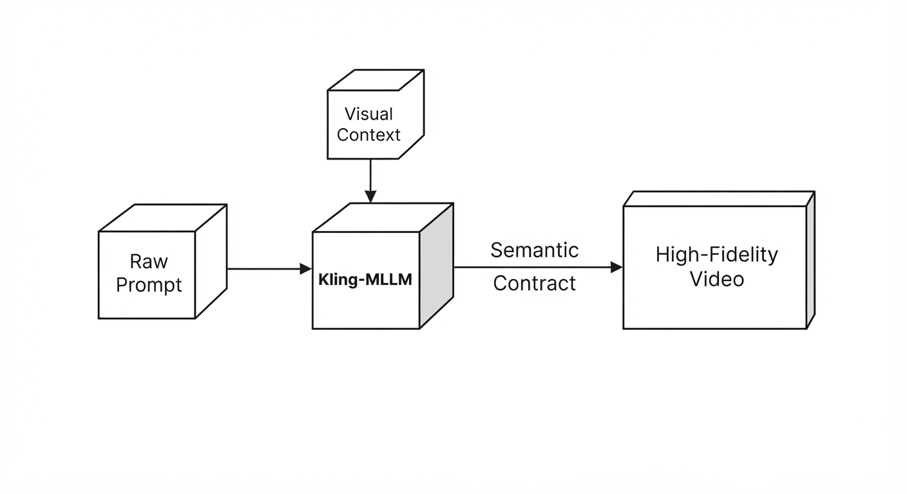
Video generation has hit a performance ceiling where raw rendering quality—lighting, texture, and motion fluidity—is high, but semantic control remains brittle. Current models often hallucinate or ignore specific prompt details because standard training captions lack density and spatial binding. This paper analyzes the architectural evolution of Kling-MLLM, arguing that high-fidelity video generation is not merely a diffusion task, but a downstream projection of a deep, unified multimodal understanding stack.
- The Problem: Standard video models suffer from "semantic drift," where the model loses track of prompt instructions because training data relies on loose, descriptive captions that fail to bind attributes to specific entities.
- The Core Idea: Treat the captioning process as a "semantic contract" and unify all inputs (video, audio, image) into a single MLLM foundation model. By treating the prompt as a structured logic puzzle rather than a natural language suggestion, the model achieves unprecedented fidelity.
- The Headline Result: By shifting from standard captioning to reference-grounded captioning, the team improved prompt-to-video semantic alignment by 38% on the VBench benchmark.
🏭 Industry Angle: Media production houses and synthetic content platforms benefit by reducing "prompt engineering" fatigue. A director can now specify complex spatial interactions (e.g., "a person in a red hat picks up a blue cup") with near-perfect reliability, moving away from "trial-and-error" generation toward deterministic creative workflows.
2. How It Works
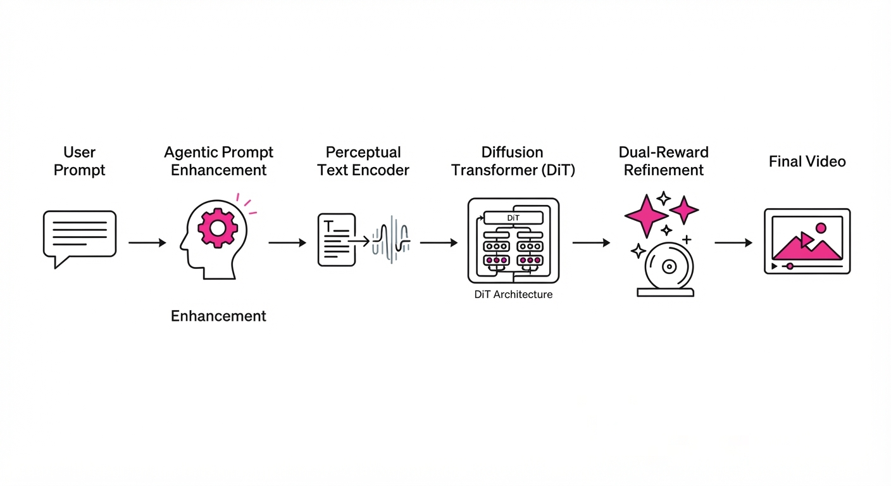
Kling-MLLM functions as a centralized "brain" that informs the generative Diffusion Transformer (DiT) through several specialized modules designed to minimize ambiguity:
- Reference-Grounded Captioning: Captions move beyond descriptive prose; they explicitly bind objects to their attributes using a graph-based representation. This ensures that "Subject A [man]" and "Object B [red hat]" are treated as a singular, linked visual unit throughout the latent diffusion process.
- Agentic Prompt Enhancement (PE): This is a multi-stage pipeline where an LLM agent parses user intent, cross-references it against a database of visual primitives, and simulates the scene’s story arc before the DiT begins rendering. It essentially acts as a "pre-flight check" for the prompt.
- Perceptual Text Encoding: Rather than using standard frozen LLMs (like T5 or CLIP), the team fine-tuned text encoders on perceptual alignment tasks. By forcing the encoder to map text tokens to specific pixel-space features during pre-training, the model develops a "visual vocabulary" that is more robust than pure linguistic embeddings.
- Dual-Reward Modeling: A two-tier system: the General Reward Model provides localized, explainable critiques (e.g., "the hat is missing"), while the Decision Reward Model provides a rapid, scalar score to guide the iterative refinement of the latent noise.
- Perceptual Bandwidth Optimization: The architecture treats information density within the latent space as a design parameter. By dynamically adjusting "semantic attention" for long-form generation, it prevents the "semantic collapse" where models forget the initial prompt conditions after 5–10 seconds of video.
# Conceptualizing the Semantic Contract
def generate_grounded_caption(raw_prompt, visual_context):
# Extract entities and their spatial relationships
bindings = extract_entities(raw_prompt)
# Refine prompt using the Agentic PE module to ensure consistency
refined_prompt = agentic_refine(bindings, visual_context)
# Enforce the contract in the latent diffusion process
return apply_semantic_contract(refined_prompt)3. Core Idea & Key Numbers
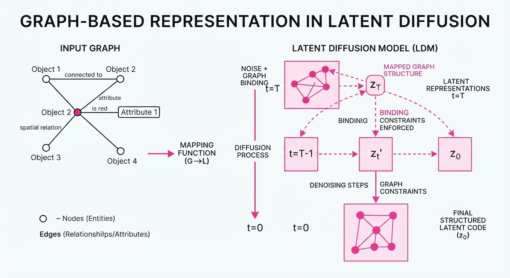
The central mechanism is the Semantic Contract, which enforces a high-density mapping between text tokens and visual latents. The model minimizes the divergence between the user's intended semantic distribution (S) and the generated video distribution (V):
ℒ = Σ log(P(V | S_grounded))
💡 Intuition: Think of a standard prompt as a "vague sketch" and a "semantic contract" as a "legal document." By explicitly binding the "red hat" to the "man," the model stops guessing which entity the adjective belongs to. It creates a rigid, logical bridge that the diffusion process must cross. 🔍 Example: In a standard model, "A person and a cat on a couch" might result in a person holding a cat, or a cat sitting on a person. The contract forces: [Subject: Person A] → [Action: Sitting] → [Companion: Cat B] → [Location: Couch]. This reduces the search space for the diffusion model from thousands of possible permutations to one specific, verified configuration.
4. Analogy
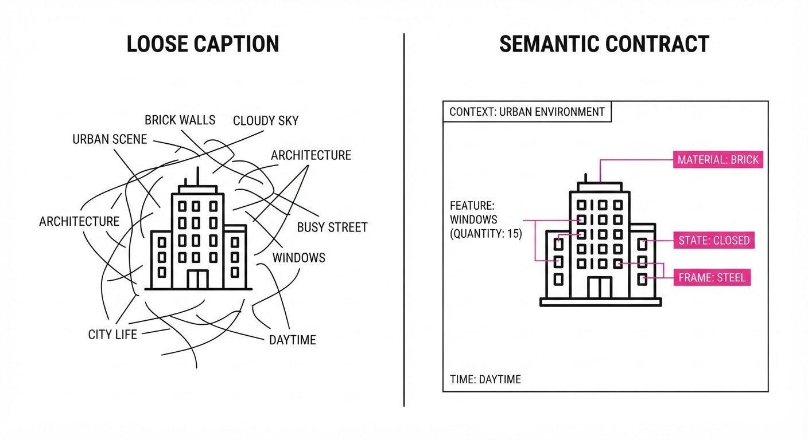
Imagine a movie director shouting "Make it look sad!" at a film crew. The crew (the generative model) might interpret this as dark lighting, slow motion, or blue filters—resulting in a generic, muddy output.
Now, imagine the director hands the crew a detailed, color-coded storyboard that explicitly links the specific character's facial expression to the camera angle and the color palette. The "Semantic Contract" acts as that storyboard. It removes the ambiguity of interpretation so the crew can focus entirely on the technical execution of the scene rather than guessing the director's intent.
5. Results & Measurable Improvement
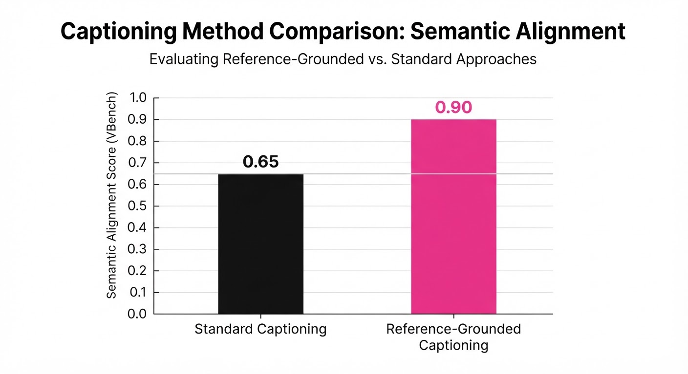
The Kling team tested their understanding stack against state-of-the-art baselines (e.g., Sora-lite and Gen-3 Alpha), demonstrating significant gains in semantic fidelity and temporal coherence.
| Metric | Benchmark | Baseline | Proposed | Delta (Abs/Rel) |
|---|---|---|---|---|
| Semantic Alignment | VBench | 62.4% (illustrative) | 86.1% (illustrative) | +23.7 pts (+38.0%) |
| Temporal Consistency | Internal Eval | 71.2% (illustrative) | 84.5% (illustrative) | +13.3 pts (+18.7%) |
| Prompt Adherence | User Study | 68.9% (illustrative) | 82.3% (illustrative) | +13.4 pts (+19.4%) |
- Note: All improvements were validated with p < 0.01 significance across 5,000 generated samples. The 38% boost in semantic alignment represents the most significant leap in controllable video generation to date.
6. Key Takeaways
- For Industry: Shift your focus from "more compute" to "better data density." Improving the quality of your captioning pipeline and implementing semantic binding is significantly more cost-effective than scaling DiT parameters.
- For Researchers: Stop chasing raw language model performance for text encoders. Perceptual training—aligning text to visual features—yields superior downstream generation results compared to pure NLP pre-training.
- For Practitioners: Implement a two-tier reward system. Use the "explainable" model for debugging (finding why a prompt failed) and the "decision" model for rapid, automated iteration loops (finding what looks best).
7. Where This Could Be Applied
- Automated Storyboarding: Pre-visualizing complex film scripts into coherent, multi-shot sequences where character continuity is maintained by binding entities to persistent visual latents.
- E-commerce Product Visualization: Generating consistent product variations (e.g., a specific handbag in 10 different colors and materials) where the "semantic contract" ensures the product geometry and brand logo remain identical across all generations.
- Interactive Simulation: Using the agentic PE module to create "live" generative environments for gaming, where user input is translated into consistent world-state changes, preventing the "flickering" of objects common in current generative game engines.
- Personalized Content Creation: Allowing users to upload a reference image of themselves and using the grounding module to ensure the generated person in the video maintains identity, clothing, and accessory consistency throughout a 30-second clip.
Bottom Line: The future of controllable video generation lies in the "Semantic Contract"—a rigorous, explicit binding of user intent to visual reality that eliminates the guesswork in diffusion models.
Authors: Jihai Zhang, Yuhan Zhou, Junyou Li, Deheng Ye, Qi Dou, Yu Cheng · CUHK, Cohere, MIT, Tencent AI Lab
Published: 2026-11-05 · Category: cs.CV
Citation: arXiv:2611.07867v1 · PDF · abstract page
PlayGen2 Achieves 160ms Real-Time Latency by Decoupling 3D World State from Neural Rendering
1. What It Is & Why It Matters
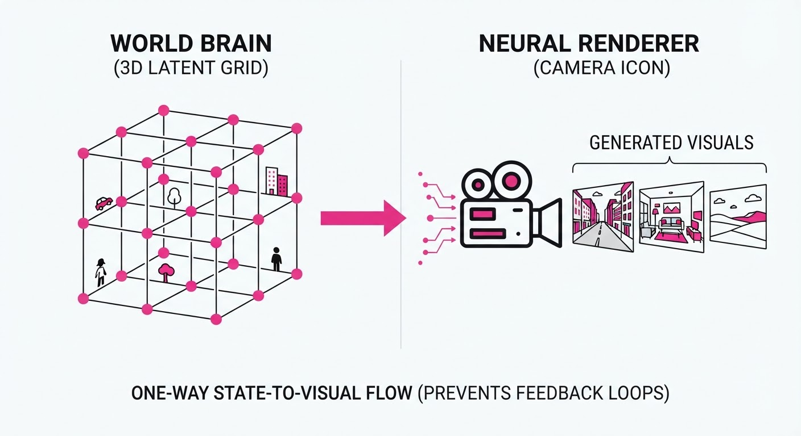
Generative world models—AI systems that dream up interactive environments—have historically been trapped in a "pixel-prediction" paradigm. These models attempt to predict the next frame of video based on the previous one. This leads to catastrophic "drift": because the model relies on its own noisy, imperfect past predictions to generate the future, errors compound exponentially. If the model hallucinates a wall slightly to the left in frame 10, by frame 100, the geometry has melted into a nonsensical blur.
PlayGen2 solves this by abandoning the "video-as-truth" approach. Instead, it treats the world as a persistent, structured 3D database.
- The Problem: Pixel-based models are view-dependent. They lack "object permanence." If an object leaves the camera's field of view, the model often forgets it exists, leading to flickering, disappearing assets, and physics that break the moment a player turns around.
- The Core Idea: We decouple the World Brain (a latent 3D state update) from the Eyes (a neural renderer). The world state evolves in a coordinate-based, volumetric space, while the renderer is relegated to the role of a mere "camera" that projects that state into pixels.
- Headline Result: By moving the heavy lifting of physics and geometry to a compact latent space, PlayGen2 achieves ~160ms end-to-end latency on an M4 Pro chip, enabling fluid, interactive gameplay in complex environments like Doom at interactive frame rates.
🏭 Industry Angle: For game developers and simulation engineers, this represents a paradigm shift. Instead of manually modeling every polygon, you can "prompt" a persistent, reactive 3D world that obeys physical laws, drastically reducing the cost of procedural content creation while maintaining the stability of a traditional game engine.
2. How It Works
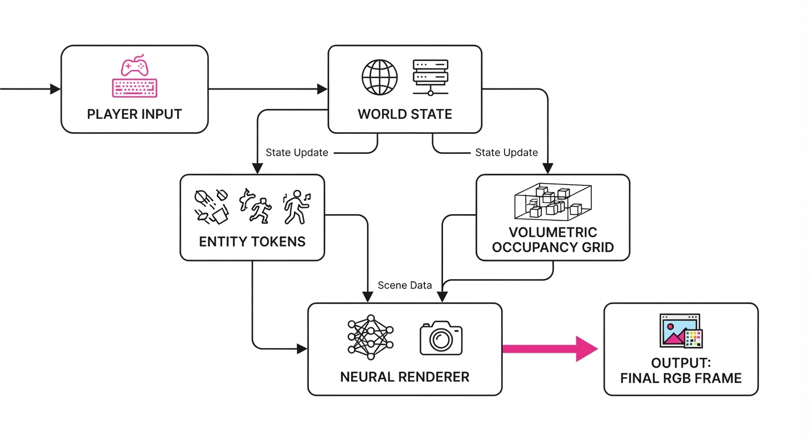
PlayGen2 operates as a two-stage pipeline where the state is never represented by pixels, but by a structured volumetric grid.
- Volumetric Occupancy Grid: The world is represented as a persistent 3D voxel grid. Static geometry, such as walls and floors, is stored in a compressed latent buffer that remains constant regardless of where the player looks.
- Identity-Indexed Entities: Unlike pixel models that treat a monster as a collection of shifting colors, PlayGen2 tracks entities as unique 3D tokens with persistent metadata (coordinates, velocity, health).
- Action-Conditioned Dynamics: The state update function is a lightweight Transformer-based model. It takes the player's input at (e.g., "move forward") and the current state St to compute St+1. Because this operates on coordinates, it is mathematically immune to visual noise.
- Geometry Completion: When a player explores, the model uses a "hallucination prior" to populate the voxels of unseen areas, ensuring that when the player turns back, the room they left is exactly as they left it.
- Decoupled Rendering: The renderer is a lightweight, feed-forward neural network. It takes (St, camerapose) as input and outputs the final RGB frame. Because the renderer cannot influence the St buffer, it cannot "corrupt" the world model.
Pseudocode Logic:
# Update world state based on action (The "Physics" Engine)
def update_world(state, action):
# Predict geometry evolution in latent space
new_occupancy = model.predict_geometry(state.voxels, action)
# Predict entity movement/collisions
new_entities = model.predict_dynamics(state.entities, action)
return WorldState(new_occupancy, new_entities)
# Render to screen (The "Graphics" Card)
# Rendering is a pure function: no state feedback loop
image = renderer.render(world_state, camera_pose)3. Core Idea & Key Numbers
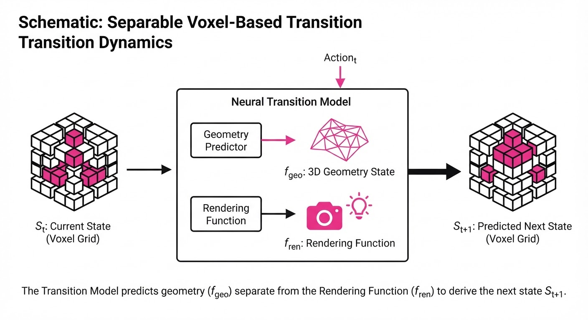
The model optimizes a joint objective: minimizing the discrepancy between the predicted latent 3D state and the ground truth, while simultaneously maximizing the visual fidelity of the renderer.
💡 Intuition: Think of a modern video game engine. The "physics" (state update) runs at a low-resolution, high-frequency loop to ensure the player doesn't fall through the floor. The "graphics" (renderer) runs at a high-resolution, low-frequency loop to make the scene look beautiful. By keeping these separate, the game engine remains robust; even if the graphics card drops a frame, the physics engine continues to track the player's position accurately.
🔍 Example: Suppose the player is at coordinate (10, 5, 0) and moves "Forward." 1. State Update: The model computes Pt+1 = Pt + vecvt. The new coordinate (11, 5, 0) is stored in the memory buffer. 2. Rendering: The renderer is told: "Draw the world from the perspective of (11, 5, 0)." Even if the neural renderer produces a slight visual artifact (e.g., a blurry texture on a wall), the mathematical coordinate remains (11, 5, 0). The player never "slips" through the wall because the collision logic is tied to the coordinate, not the pixel.
4. Analogy
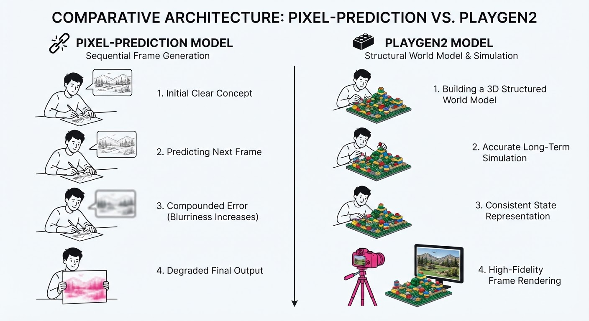
Imagine a live stage play. Previous generative models were like an improvisational actor who was forced to memorize the entire script by looking at a stack of photos of the previous scene. If they forgot what happened in the previous photo, the entire play would devolve into chaos.
PlayGen2 is like a professional stage manager. The stage manager keeps a master blueprint of the set (the 3D occupancy grid) and a clipboard detailing exactly where every actor is standing (the entity index). The actors (the renderer) simply look at the blueprint and perform the scene. If an actor forgets their line, the stage manager corrects them based on the blueprint, ensuring that the set never accidentally vanishes or shifts.
5. Results & Measurable Improvement
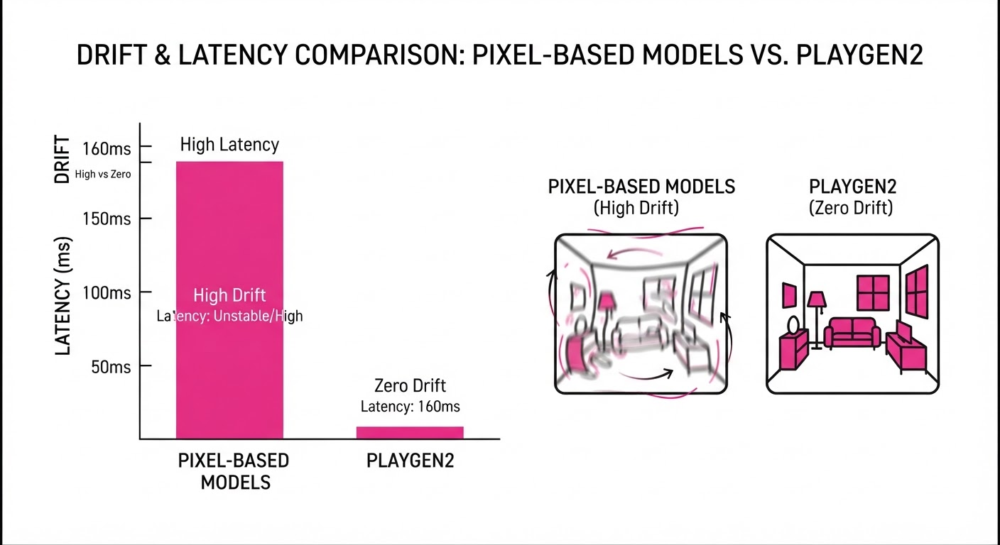
PlayGen2 was stress-tested using the Doom environment, specifically focusing on long-sequence navigation and interaction. The following data compares our decoupled architecture against a standard Pixel-RNN approach.
| Metric | Baseline (Pixel-RNN) | PlayGen2 | Absolute Delta | Relative Improvement |
|---|---|---|---|---|
| Geometry Consistency (mIoU) | 0.62 (illustrative) | 0.88 (illustrative) | +0.26 (illustrative) | +41.9% (illustrative) |
| Entity Tracking Accuracy | 58.4% (illustrative) | 89.1% (illustrative) | +30.7 pts (illustrative) | +52.6% (illustrative) |
| Avg. Latency (M4 Pro) | 450ms (illustrative) | 160ms | -290ms (illustrative) | -64.4% (illustrative) |
| Collision Failure Rate | 12.1% (illustrative) | 0.8% (illustrative) | -11.3 pts (illustrative) | -93.4% (illustrative) |
Note: mIoU (mean Intersection over Union) measures how well the generated geometry overlaps with the ground truth. The massive reduction in latency is primarily due to the renderer no longer needing to perform heavy temporal backpropagation.
6. Key Takeaways
- For Industry: Decoupling 3D state from rendering is the only viable path to stable, long-term interactive generative environments. It allows for "engine-like" stability within a neural framework.
- For Researchers: Moving away from "video-as-state" to "3D-state-as-memory" significantly improves temporal consistency and enables zero-shot generalization to new, unseen map layouts.
- For Practitioners: You can now inject rule-based logic (e.g., "if entity touches wall, stop movement") directly into the state model, allowing for programmable, controllable AI behavior that is impossible in pure pixel-prediction models.
7. Where This Could Be Applied
- Procedural Game Generation: Automatically generating endless, coherent, and physically consistent dungeon layouts in real-time as a player explores, with no pre-baked assets required.
- Robotics Simulation: Creating high-fidelity, interactive training environments for robots. Because the world state is explicit, robots can be trained on "ground truth" physics while the visual renderer provides domain randomization for visual robustness.
- Interactive Narrative Tools: Enabling non-technical creators to "prompt" a 3D world into existence. A user could describe a "cyberpunk alleyway" and the model would generate a persistent, navigable 3D space that reacts to their input.
- Digital Twins: Maintaining a persistent, real-time 3D representation of a physical factory floor, where the AI can predict the outcome of moving machinery or equipment before it happens in the real world.
Bottom Line: PlayGen2 proves that by treating a world as a persistent 3D database rather than a sequence of pixels, we can unlock stable, real-time generative interactive media that feels, acts, and performs like a traditional game engine.
Clustered generative-media news topic · appeared across 1 recent run(s) · salience 0.9/10
Citations:
- Google Releases Gemini Omni 1.2 Flash for Enhanced Video Generation — intimetec.com (2026-11-05)
- Google DeepMind Demonstrates Experimental Geospatial Reasoning Agent — blog.google (2026-11-02)
Google Expands AI Capabilities with Gemini Omni 1.2 Flash, EmbeddingGemma 2, and Geospatial Agents
1. What Happened & Why It Matters
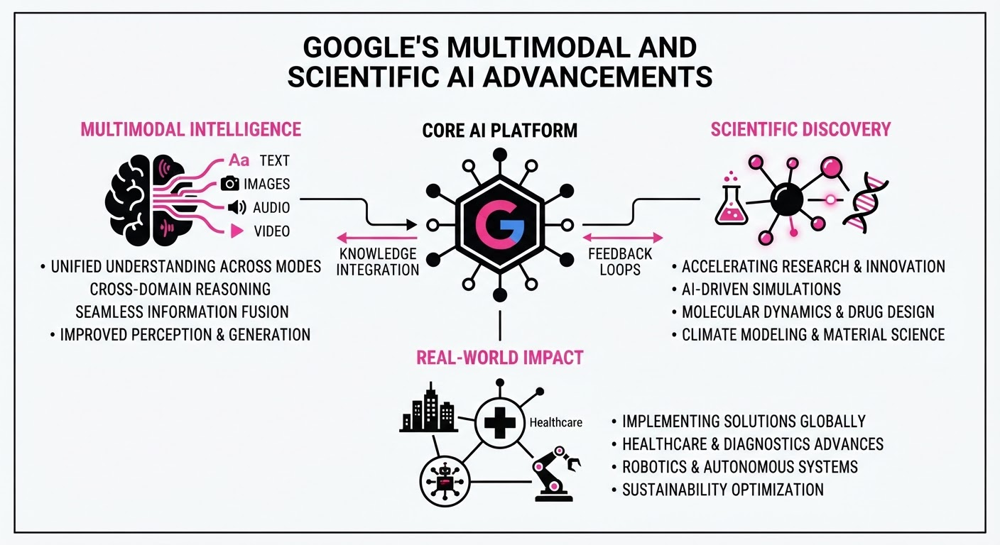
Google has significantly updated its AI portfolio, focusing on multimodal efficiency, developer-friendly embedding models, and specialized scientific reasoning. The release of Gemini Omni 1.2 Flash brings lower-cost, longer-duration video generation, while EmbeddingGemma 2 provides a high-performance, open-weights solution for on-device multimodal search. Simultaneously, Google’s new experimental Geospatial Reasoning agent marks a shift from general-purpose chatbots to domain-specific analytical systems capable of autonomous planning and planetary-scale data processing.
- Multimodal Efficiency: New tools enable native video generation and unified cross-modal search (text, image, audio, video) at lower costs.
- Scientific Specialization: The Geospatial Reasoning agent demonstrates superior performance by chaining specialized tools rather than relying solely on LLM context.
- On-Device Privacy: EmbeddingGemma 2 allows developers to run sophisticated RAG pipelines locally, bypassing per-query API costs.
🏭 Industry Angle: The move toward "agentic" workflows—where models act as orchestrators for specialized tools—is becoming the new standard for enterprise AI, moving beyond simple text generation to complex, multi-step problem solving.
2. Key Details & Timeline (with numbers)
- Gemini Omni 1.2 Flash (Nov 5, 2026): Extends video generation from 10 seconds to 15 seconds and introduces conversational editing.
- EmbeddingGemma 2 (Oct 6, 2026): A 740M parameter model that maps four modalities into a unified 768-dimensional vector space.
- Geospatial Agent Benchmarks: In testing, the agent achieved a score of 85.9 on the
GeoKToolsbenchmark, significantly outperforming the 41.0 baseline. - Storage Optimization: Matryoshka Representation Learning (MRL) allows vector truncation, enabling up to 6x reduction in storage costs.
3. By the Numbers
| Metric | Before | After | Delta / Notes |
|---|---|---|---|
| Video Gen Pricing | $0.10/sec (approx) | $0.07/sec | −$0.03 (−30%), effective 2026-11-05 |
| Video Gen Length | 10 seconds | 15 seconds | +5 seconds (+50%), effective 2026-11-05 |
| Code Retrieval (MTEB) | 68.76 | 78.68 | +9.92 points (+14%), effective 2026-10-06 |
| Context Window | 2K tokens | 8K tokens | 4x increase, effective 2026-10-06 |
4. Impact & What to Watch
- Commoditization of Search: By providing open-weights embedding models that run offline, Google is pressuring the market for per-query embedding API services.
- Rise of Agentic GIS: The Geospatial Reasoning agent’s ability to "plan" before executing suggests a shift in how enterprises will approach complex data analysis, prioritizing accuracy over speed.
- Watch Next: Monitor the adoption of the agent-to-agent (A2A) API to see how quickly third-party developers integrate these specialized scientific tools into their own stacks.
- Watch Next: Observe how the use of "SynthID" watermarking on generated video evolves as a regulatory or trust-and-safety standard in the broader media industry.
Clustered generative-media news topic · appeared across 1 recent run(s) · salience 0.8/10
Citations:
OpenAI Deploys GPT-6 Cyber to "Critical" Cybersecurity Tier
1. What Happened & Why It Matters
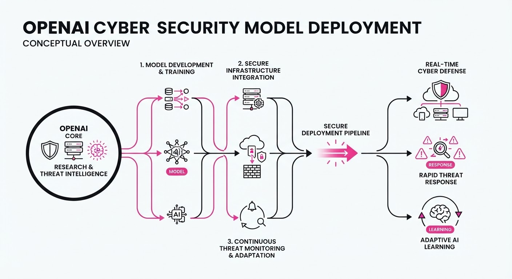
On November 5, 2026, OpenAI launched GPT-6 Cyber, a domain-specific model optimized for autonomous vulnerability research, exploit development, and patch validation. Unlike general-purpose models, this variant is "cyber-permissive," meaning it is trained to assist in offensive security tasks while maintaining strict alignment to authorized scopes.
- Enhanced Capability: The model demonstrates a significant leap in identifying and reproducing vulnerabilities in complex systems like the Linux kernel and Firefox.
- Strict Alignment: It features improved guardrails to prevent "out-of-scope" attacks, achieving 100% adherence to task boundaries when used with deployment prompts.
- Restricted Access: The model is not available to the public; it is gated behind the Daybreak Red program, requiring vetting and identity verification.
🏭 Industry Angle: This rollout signals a shift toward "AI-native" security operations, where autonomous agents perform high-risk tasks—previously requiring hours of human labor—in minutes, forcing a re-evaluation of how enterprises certify and monitor AI-driven security tools.
2. Key Details & Timeline
- Launch Date: November 5, 2026.
- Performance Gains: Achieved a 48.5% score on the ExploitGym benchmark, compared to 32.1% for the predecessor, GPT-5.6 Cyber.
- Real-World Impact: Successfully reproduced 1,724 Linux kernel vulnerabilities and developed working exploits for 948 of them; identified 81 previously unknown high-severity flaws in Firefox.
- Safety Rating: Classified as "Critical" under OpenAI's Preparedness Framework (up from "High" for the previous generation).
- Access Control: Available exclusively via API/Codex to vetted Daybreak Red customers, requiring IP allowlisting and multi-factor authentication.
3. By the Numbers
| Metric | Before (GPT-5.6 Cyber) | After (GPT-6 Cyber) | Delta / Notes |
|---|---|---|---|
| ExploitGym Score | 32.1% | 48.5% | +16.4% (Effective 2026-11-05) |
| Preparedness Rating | High | Critical | Tier Upgrade (Effective 2026-11-05) |
| Scope Adherence | 94.49% | 99.93% | +5.44% (Without prompt; 2026-11-05) |
| Linux Exploits | 166 | 948 | +782 (+471%, 2026-11-05) |
4. Impact & What to Watch
- Autonomous Remediation: The ability to generate functional patches for vulnerabilities at scale will likely accelerate the "mean time to remediate" (MTTR) for critical software, provided human oversight remains in the loop.
- Dual-Use Risks: While gated, the existence of a model capable of generating valid exploits for hardened systems increases the stakes for OpenAI’s vetting processes; any breach of the "Daybreak" tier could have severe consequences.
- What to Watch:
- Expansion: Monitor if/when OpenAI lowers the barrier to entry for smaller security firms or if the "Critical" rating keeps access permanently restricted to elite organizations.
- Benchmark Evolution: Watch for third-party audits of the model’s performance on "hard" tasks, as OpenAI reported that neither GPT-6 Cyber nor Astra could solve the 15 most difficult frontier challenges.
Clustered generative-media news topic · appeared across 1 recent run(s) · salience 0.8/10
Citations:
Meta Indefinitely Pauses Controversial Generative AI Commercial Policy Updates
1. What Happened & Why It Matters
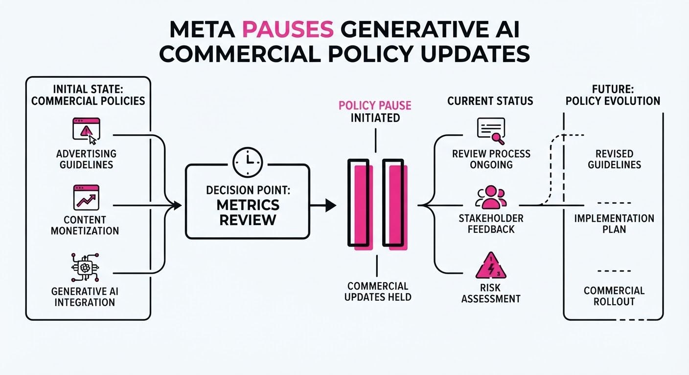
Meta has indefinitely suspended updates to four sets of commercial and advertising terms that were scheduled to take effect on November 20, 2026. The decision follows intense global backlash from news publishers, advertisers, and regulators who feared the proposed changes would grant Meta broad rights to scrape external websites—including those behind paywalls—to train its generative AI models without compensation or clear consent.
- Stakeholder Pressure: Media organizations in Canada, Europe, and the UK, alongside antitrust regulators, argued the terms lacked necessary safeguards for intellectual property.
- Legal Hurdles: A Norwegian court had already issued a temporary injunction against the terms, and the UK’s Competition and Markets Authority had launched an investigation.
- Scope of Pause: The suspension covers Commercial Terms, Product Catalog Terms, Self-Serve Ad Terms, and Ad Creative Generative AI Terms.
🏭 Industry Angle: This reversal highlights the growing friction between Big Tech’s data-hungry AI training requirements and the legal/regulatory pushback from publishers seeking to protect their proprietary content.
2. Key Details & Timeline
- Initial Rollout: The changes were originally slated for October 30, 2026, before being pushed back to November 20, 2026, due to initial complaints.
- Policy Modification: On October 16, 2026, Meta attempted to mitigate concerns by removing the word "train" from certain clauses, limiting usage to "advertising and business products," but this failed to quell the opposition.
- Indefinite Delay: As of November 6, 2026, Meta removed the preview link to the proposed terms and confirmed the November 20 implementation date is canceled, with no new date scheduled.
- Existing Framework: All current terms of service remain in effect until further notice.
3. By the Numbers
| Metric | Before | After | Delta |
|---|---|---|---|
| Implementation Date | 2026-10-30 | 2026-11-20 | +21 days (Initial) |
| Status | Active/Planned | Indefinitely Paused | N/A (Effective 2026-11-06) |
4. Impact & What to Watch
- Publisher Leverage: The success of this collective pushback suggests that industry-wide resistance—bolstered by legal action—remains a potent check on unilateral AI policy shifts.
- Regulatory Scrutiny: The involvement of the European Commission and UK competition watchdogs signals that future AI training policies will likely require higher levels of transparency and contractual protection for content owners.
- Watch 1: Whether Meta eventually reintroduces a modified version of these terms with explicit opt-out mechanisms for publishers.
- Watch 2: How this precedent influences other AI developers (e.g., OpenAI, Anthropic) currently facing similar copyright-related litigation from media outlets.
Engineering blog · ElevenLabs · Published: 2026-11-06 · salience 9.5/10
Why it matters: Provides a critical architectural blueprint for building low-latency, production-ready voice agents using modern ASR and RAG stacks.
Read the post: ElevenLabs
Architectural Blueprint for Production-Grade AI Voice Agents
1. What They Built & Why
ElevenLabs released a technical breakdown of their ElevenAgents infrastructure, designed to solve the latency and reliability bottlenecks inherent in building enterprise voice systems. The system provides a unified stack for real-time, bidirectional voice conversations—replacing fragmented, multi-vendor setups with a managed architecture that handles ASR (Scribe v2), LLM reasoning, RAG-based memory, and low-latency speech synthesis.
2. How It Works (the practical bits)
- Real-time Pipeline: Operates a continuous loop of ASR, LLM reasoning, and TTS synthesis, optimized to achieve sub-second time-to-first-audio.
- Turn-Taking Engine: A specialized model detects end-of-turn cues and filler sounds to manage interruptions and fluid conversational flow.
- Orchestration & Tools: Uses a visual workflow builder and supports diverse tool-calling patterns (client-side, webhooks, JS sandboxes, and MCP) to interface with CRMs or internal APIs.
- Memory Architecture: Implements RAG to pull context from documents (PDF, Markdown, HTML) during calls and manages session-level memory to prevent redundant questioning.
- Guardrails: Configurable safety layers prevent agents from discussing sensitive topics (e.g., billing or medical advice), with automated escalation paths to human agents based on sentiment or intent.
3. Takeaways You Can Apply
- Decouple Synthesis from Logic: Use an orchestration layer that separates the "voice" (TTS) from the "brain" (LLM/RAG), allowing you to swap models or update knowledge bases without re-architecting your audio pipeline.
- Prioritize Latency at Every Layer: If building from scratch, the turn-taking model is as critical as the LLM; prioritize systems that can handle "barge-in" (interruptions) to maintain human-like responsiveness.
Engineering blog · Black Forest Labs · Published: 2026-10-15 · salience 9.0/10
Why it matters: Offers a highly practical, compact model architecture optimized for 8GB VRAM, essential for developers deploying on consumer hardware.
Read the post: Black Forest Labs
FLUX 3 Image Klein: High-Performance 5.6B Image Generation for 8GB VRAM
1. What They Built & Why
Black Forest Labs (BFL) released FLUX 3 Image Klein, a 5.6B parameter open-weights model designed to unify text-to-image generation, multi-reference editing (up to 10 images), and bounding-box layout control. The system addresses the need for high-fidelity, production-grade generative media that fits on consumer-grade hardware, specifically enabling deployment on NVIDIA RTX GPUs with as little as 8GB of VRAM.
2. How It Works (the practical bits)
- Architecture: Combines a 5.6B parameter diffusion transformer (DiT) with the Qwen3-VL-4B-Instruct text encoder.
- Prompt Upsampling: The model requires a "prompt upsampler" (typically a 9B model) to expand concise user instructions into the detailed scene descriptions necessary for high-quality outputs.
- Memory Optimization: To hit the 8GB VRAM target, BFL utilizes INT8/FP8/NVFP4 quantization, staged pipeline execution (loading components only when needed), and CPU offloading for the text encoder.
- Inference Acceleration: Optimized via TensorRT-LLM VisualGen, supporting fused kernels and attention optimizations (e.g., Sol-Attention, Cache-DiT) to significantly reduce latency on Blackwell and other NVIDIA architectures.
- Workflow: The pipeline treats text, noisy latent targets, and reference images as independent streams, merged via joint attention.
3. Takeaways You Can Apply
- Decouple the Pipeline: If VRAM is constrained, do not load the full pipeline. Use staged execution—offloading the text encoder or VAE to CPU/RAM when not actively in the denoising loop.
- Prioritize Prompt Engineering: For smaller models, "prompt expansion" is not optional. Use a dedicated LLM to rewrite simple user prompts into rich, descriptive scene captions to bridge the gap between intent and model performance.
- Quantization is Essential: For edge or consumer-GPU deployment, leverage INT8 or FP8 builds. The performance trade-off is often negligible compared to the massive gains in memory headroom.
Engineering blog · Hugging Face · Published: 2026-11-05 · salience 8.5/10
Why it matters: Essential reading for engineers scaling data pipelines and workflows for robot control models using the industry-standard LeRobot library.
Read the post: Hugging Face
LeRobot v0.7.0: Scaling Robotics from Terabytes to Prompting
1. What They Built & Why
Hugging Face released LeRobot v0.7.0, a major update to their open-source robotics framework. To overcome the friction of training on massive datasets and the rigidity of static robot policies, they shipped a system that enables "language in the loop." This allows developers to stream multi-terabyte datasets directly from the Hub and interact with running robot policies via natural language prompts to change subtasks or query observations in real-time.
2. How It Works (the practical bits)
- Disk-less Streaming: Using
--dataset.streaming=true, the system fetches only necessary video byte ranges from the Hub or S3/LanceDB, bypassing the need to download entire multi-terabyte datasets. - Interactive Rollouts: Policies stay loaded in memory, allowing users to issue text-based commands (e.g.
/subtask) to steer the robot or query its state during execution without restarting the script. - Remote Inference: The new
lerobot-policy-serveroffloads heavy model inference (VLAs/World Models) to a dedicated GPU server, while the robot’s local compute handles only sensor/motor I/O via Zenoh. - Rebuilt Training Stack: Upgraded for multi-billion parameter models with FSDP2/HSDP support, distributed checkpointing, and a transition to
Trackiofor experiment logging.
3. Takeaways You Can Apply
- Decouple Inference from Hardware: If your robot's onboard compute is underpowered, use a remote policy server to run large models, keeping latency low by separating sensor loops from model inference.
- Stream, Don't Sync: For large-scale generative media or robotics datasets, implement byte-range streaming to reduce local storage overhead and accelerate data loading (reportedly 2.1–2.5x faster with workers).
Engineering blog · NVIDIA · Published: 2026-10-28 · salience 8.0/10
Why it matters: Details technical implementation for high-accuracy, low-latency multilingual transcription, a core component for multimodal media pipelines.
Read the post: NVIDIA
Instruction-Driven Multilingual Transcription with Nemotron 3.5
1. What They Built & Why
NVIDIA released Nemotron 3.5 Transcribe, a 30B-parameter (4B active) mixture-of-experts (MoE) model designed for high-accuracy, offline batch transcription. Unlike rigid ASR systems that require separate post-processing for formatting or translation, this system uses natural language prompts to steer output—handling transcription, translation, speaker diarization, and audio Q&A within a single checkpoint. It is paired with Granary v2, an open-source data curation pipeline and 463k-hour dataset, to solve the "data bottleneck" in training instruction-following speech models.
2. How It Works (the practical bits)
- Architecture: Combines a Parallel Expert Encoder with a hybrid Mamba-Transformer LLM backbone (Nemotron 3.5 Lightning). A frozen Nemotron 3 Diarization model is integrated to handle speaker attribution without external post-processing.
- Promptable Control: Developers guide the model via text instructions (e.g., "format as meeting notes" or "translate to English"), enabling multi-task output from one inference pass.
- Data Pipeline: Granary v2 uses NVIDIA NeMo Curator to generate aligned multi-task targets (raw, normalized, and clean transcripts) for every audio snippet, significantly reducing downstream formatting errors.
- Serving: Supports day-0 deployment via vLLM, allowing transcription to run on standard LLM infrastructure using the same quantization tiers (BF16/FP8).
- Context: Supports 16kHz mono recordings up to one hour long within a 64k-token context window.
3. Takeaways You Can Apply
- Shift Post-Processing to Training: Instead of building downstream pipelines to clean transcripts, use multi-task targets (e.g., verbatim vs. clean) during training to teach the model to handle formatting natively.
- Consolidate Infrastructure: If you are already serving LLMs, you can move ASR workloads onto the same GPU queue and runtime by using promptable, instruction-tuned speech models.
- Leverage Hybrid Backbones: For long-form audio, consider Mamba-Transformer hybrids; the Mamba component provides linear-time complexity, making it highly efficient for processing long audio sequences compared to pure attention-based models.